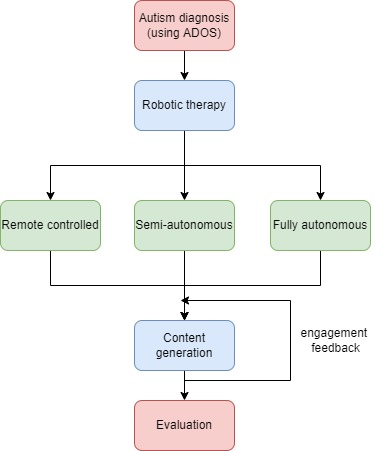

Journals and pre-prints
Mishra, R. and Welch, K.C., 2024. Towards scalable robotic intervention of children with Autism Spectrum Disorder using LLMs. arXiv preprint arXiv:2402.00260.[link] [bibtex]
 Abstract: In this paper, we propose a social robot capable of verbally interacting with children with ASD. This communication is meant to teach perspective-taking using text generated using a LLM pipeline. The social robot NAO acts as a stimulator (verbally describes a social situation and asks a question), prompter (presents three options to choose from), and reinforcer (praises when the answer is correct). For the role of the stimulator, the social situation, questions, and options are generated using our LLM pipeline. We compare two approaches: GPT-2 + BART and GPT-2 + GPT-2, where the first GPT-2 common between the pipelines is used for unsupervised social situation generation. We use the SOCIALIQA dataset to fine-tune all of our LLM pipelines. We found that the GPT-2 + BART pipeline had a better BERTscore for generating the questions and the options by combining their individual loss functions. This observation was also consistent with the human evaluations. Lastly, the unsupervised generation of social situations was visualized using T-SNE plots, and the entire pipeline was evaluated for appropriateness for children with ASD by human experts.
Abstract: In this paper, we propose a social robot capable of verbally interacting with children with ASD. This communication is meant to teach perspective-taking using text generated using a LLM pipeline. The social robot NAO acts as a stimulator (verbally describes a social situation and asks a question), prompter (presents three options to choose from), and reinforcer (praises when the answer is correct). For the role of the stimulator, the social situation, questions, and options are generated using our LLM pipeline. We compare two approaches: GPT-2 + BART and GPT-2 + GPT-2, where the first GPT-2 common between the pipelines is used for unsupervised social situation generation. We use the SOCIALIQA dataset to fine-tune all of our LLM pipelines. We found that the GPT-2 + BART pipeline had a better BERTscore for generating the questions and the options by combining their individual loss functions. This observation was also consistent with the human evaluations. Lastly, the unsupervised generation of social situations was visualized using T-SNE plots, and the entire pipeline was evaluated for appropriateness for children with ASD by human experts.
Shah, A., Kondaurova, M.V., Pennington, R., Welch, K.C., Kuravackel, G.M. and Zheng, Q., 2022. The effect of a social robot mediator on speech characteristics of children with autism spectrum disorder. The Journal of the Acoustical Society of America, 152(4), pp.A139-A139.[link] [bibtex]
Abstract: Robot-mediated interventions have been investigated for the treatment of social skill deficits amongst children with Autism Spectrum Disorder (ASD). Does the use of a Nao robot as a mediator increase vocal interaction between children with ASD? The present study examined the vocalization and turn-taking rate in six children with ASD (mean age = 11.4 years, SD = 0.86 years) interacting with and without a Nao robot for 10 sessions, order counterbalanced. Each session lasted nine minutes. In the Robot condition, the robot provided vocal prompts; in the No Robot condition, children interacted freely. Child vocalization and turn-taking rate defined as the number of utterances/turns per second were measured. Results demonstrated that three children produced higher vocalization and turn-taking rates when a robot was present, and two when it was absent. One participant produced higher vocalization rates when the robot was not present, but more conversational turns when the robot was present. The findings suggest that the use of a Nao robot as a social mediator increases vocalization and turn-taking rates among children with ASD, but large individual variability is observed. The effect of the robot as a mediator on lexical diversity of child speech will also be investigated.Conferences
Mishra, R. and Welch, K.C., 2023, April. Social Impressions of the NAO robot and its impact on Physiology. In 2023 11th International Conference on Affective Computing and Intelligent Interaction (ACII), Special Session on Affective Robotics. [link] [bibtex]
Abstract:The social applications of robots possess intrinsic challenges with respect to social paradigms and heterogeneity of different groups. These challenges can be in the form of social acceptability, anthropomorphism, likeability, past experiences with robots etc. In this paper, we have considered a group of neurotypical adults to describe how different voices and motion types of the NAO robot can have effect on the perceived safety, anthropomorphism, likeability, animacy, and perceived intelligence of the robot. In addition, prior robot experience has also been taken into consideration to perform this analysis using a one-way Analysis of Variance (ANOVA). Further, we also demonstrate that these different modalities instigate different physiological responses in the person. This classification has been done using two different deep learning approaches, 1) Convolutional Neural Network (CNN), and 2) Gramian Angular Fields on the Blood Volume Pulse (BVP) data recorded. Both of these approaches achieve better than chance accuracy (25%) for a 4 class classification.
Mishra, R., Welch, K, 2023. Towards Forecasting Engagement in Children with Autism Spectrum Disorder Using Social Robots and Deep Learning. In 2023 IEEE SoutheastCon 2023. IEEE. [Finalist for the 2023 IEEE-HKN Best Student Paper Award] [link] [bibtex]
Abstract: The personalization of therapy for children with Autism Spectrum Disorder (ASD) has been found to be crucial in comparison to a universal approach. This personalization in therapy demands the ability to adapt to the individual's needs and engagement levels to avoid disinterest or meltdowns. This paper proposes the first step towards forecasting engagement of children with ASD during therapy sessions using Blood Volume Pulse (BVP). The BVP data is collected from an interactive session between two children with ASD in the presence of a NAO robot, and the forecast is made using a Deep Learning architecture combining Convolutional Neural Networks (CNNs) and Long-short term Memory (LSTM). Out of the three networks tested: LSTM, CNN and CNN+LSTM, the latter was found to outperform the others and gave a coefficient of determination of 0.955. The forecast was done using less than 3 minutes of prior BVP data to forecast 3 minutes into the future time steps.
Towards adaptive and personalized robotic therapy for children with Autism Spectrum Disorder. In 2022 10th International Conference on Affective Computing and Intelligent Interaction Workshops and Demos (ACIIW). IEEE. [link] [bibtex]
 Abstract: The use of robots for Autism Spectrum Disorder (ASD) research has been witnessed in all of its stages: diagnosis and therapy. This review aims to focus on summarizing the literature specific to autism therapy using robots which consists of two parts: `activities involved in therapy' and `perceiving the engagement levels during therapy'. Physiological signals and eye gaze have been used as the first approach to estimate the engagement levels based on the proposed perspective-taking and joint attention activities outlined in this review. This approach will be adopted to reduce multi-modal channels of perceived engagement, which have been found to increase latency as seen from previous literature. In the end, future directions of research based on the limitations of the existing literature have been proposed.
Pre-PhD publications
Saxena, P., Mishra, R., Gupta, K., Gupta, R. and Mishra, R., 2022. A Low-Cost and Portable Subcutaneous Vein Detection System Using a Combination of Segmentation Methods. In Proceedings of Sixth International Congress on Information and Communication Technology (pp. 869-878). Springer, Singapore. [Link to paper]
Mishra, R., Vineel, C. and Javed, A., 2020, April. Indoor Navigation of a Service Robot Platform Using Multiple Localization Techniques Using Sensor Fusion. In 2020 6th International Conference on Control, Automation and Robotics (ICCAR) (pp. 124-129). IEEE. [Link to paper]
Mishra, R., Ajmera, Y., Mishra, N. and Javed, A., 2019, October. Ego-Centric framework for a three-wheel omni-drive Telepresence robot. In 2019 IEEE International Conference on Advanced Robotics and its Social Impacts (ARSO) (pp. 281-286). IEEE. [Link to paper]
Mishra, R. and Javed, A., 2018, April. ROS based service robot platform. In 2018 4th International Conference on Control, Automation and Robotics (ICCAR) (pp. 55-59). IEEE. [Link to paper]
Posters